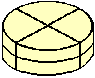
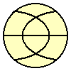

Solution to:
Birthday Cake

There is only one solution which solves the problem with three
straight cuts, and leaves exactly eight equally shaped portions. One should cut the
cake two times vertically in a '+' shape across the top and make the third cut horizontally
in the middle of the cake (looking at the cake from the front), as shown in the figure on
the right. The disadvantage of this solution is however that only four portions will
contain fruit-decoration etc., whereas the other four portions will only contain bottom
parts of the cake...
This is how the cake could be cut (seen from above), if we would
prefer to have both top and bottom parts in each piece:

Note however that this is not a real solution, since it has non-straight cuts. In this way, we could think of many other 'solutions', like:

Finally, an alternative solution that requires some rearrangement of the pieces after the first two cuts, is the following:
like before, make the first two cuts cross-wise, then arrange all four pieces in a row, and make the third straight cut like this:

![[BACK]](left.gif) back to the puzzle
back to the puzzle
Copyright © 1996-2005. RJE-productions. All rights reserved.